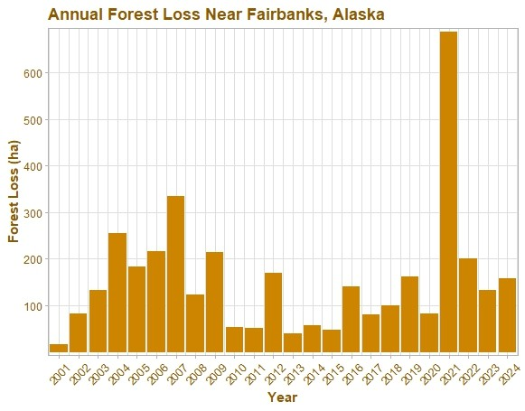
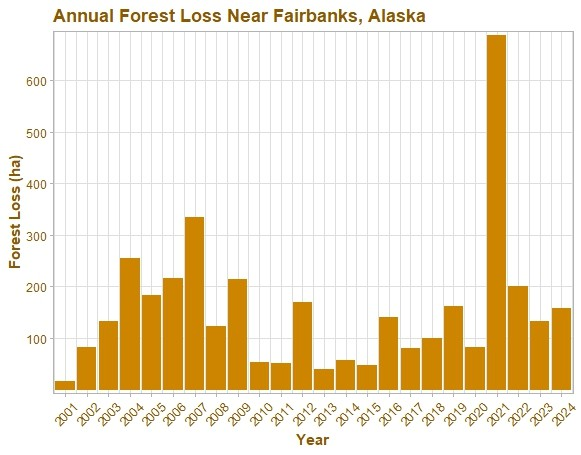
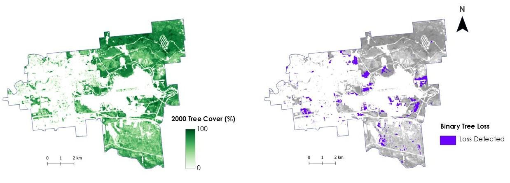
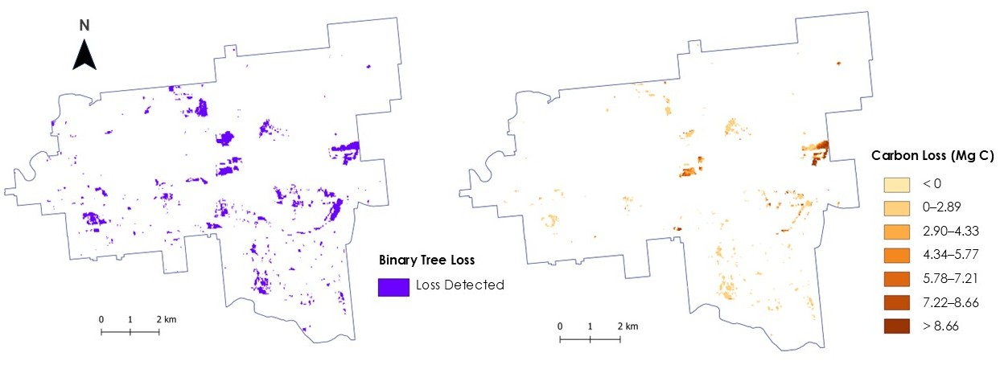
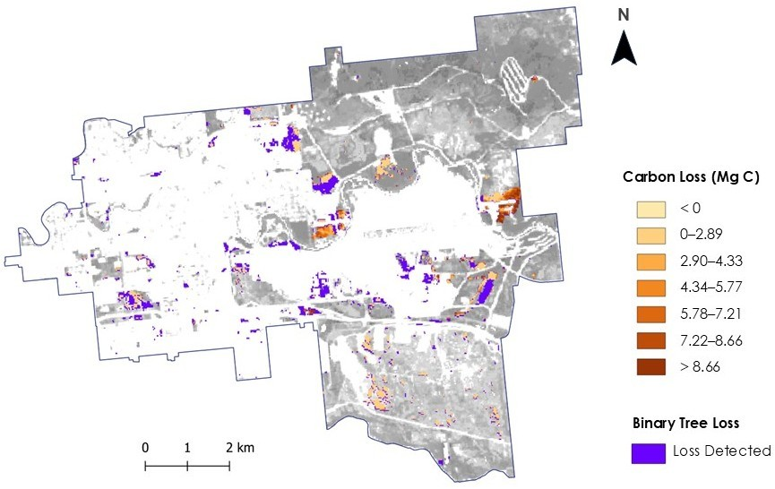

Tree Cover & Carbon Loss
Estimating Carbon and Tree Cover Loss in Fairbanks, Alaska
Overview and Methods: This mini-project sought to explore tree cover and potential carbon loss between the years of 2000 and 2024 in Fairbanks, Alaska. I obtained Global Forest Watch tree cover data from GEE and ICESat-2 measurements of biomass from NASA Earthdata Search. Using R and QGIS, I created a spatial model that calculated carbon loss per pixel. To achieve this calculation, I produced a binary raster of total tree cover loss and used aboveground biomass to estimate the carbon loss. Ultimately, there was some agreement between the detected tree loss and carbon loss rasters, but further analysis and additional inputs and data sources would strengthen this mini-project.
 

Results: The forest cover data revealed that certain areas within Fairbanks did experience detectable tree cover loss between 2000 and 2024. Within this time period, my calculations found that Fairbanks lost approximately 845.55 hectares of tree cover. As anticipated, most of the loss occurred in areas where there had previously been tree canopy (identified in the 2000 forest map data). 
The biomass data highlighted various areas that underwent carbon loss; however, it is important to note that I could only obtain biomass data from 2023, rather than 2024. This mismatch in time periods for the study limits the interpretabilty of the results, but I forged ahead out of curiosity. 
The mapped tree cover and carbon loss showed that very select regions of the Fairbanks area had detectable carbon and tree cover loss. Most of the study area depicted less than 5 Mg C lost between 2000 and 2023.
Discussion and Conclusion: A more robust analysis of carbon loss, as well as additional data sources, would expand this project and produce stronger results. Fine-tuning the data and investigating a larger study area would also perhaps improve the utility and relevancy of this work. The Global Forest Watch data could be supplemented with optical data and vegetation indices (such as NDVI), while the process of calculating and obtaining carbon loss per hectare could be built upon to incorporate alternative methods that rely on optical and SAR data. Ultimately, this was a quick project to strengthen my remote sensing, coding, and GIS skills, so I hope to use what I've learned to produce more robust, reliable, and informative research projects.
Tools Used: R, QGIS, GEE
Keywords: Remote Sensing, Carbon Loss, Tree Cover, Boreal Forest, Biomass
← Back to Projects